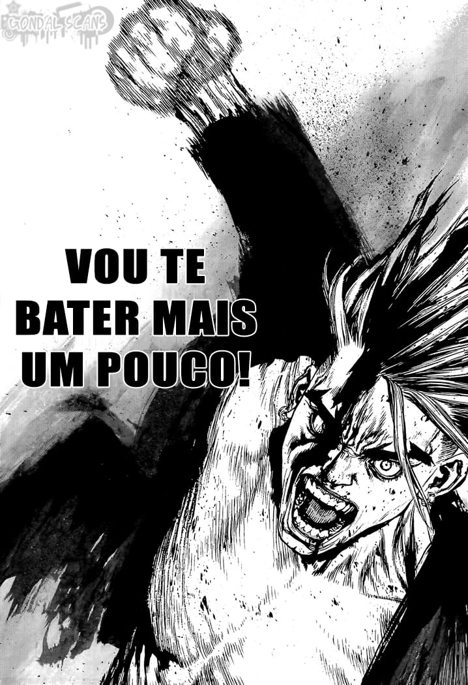
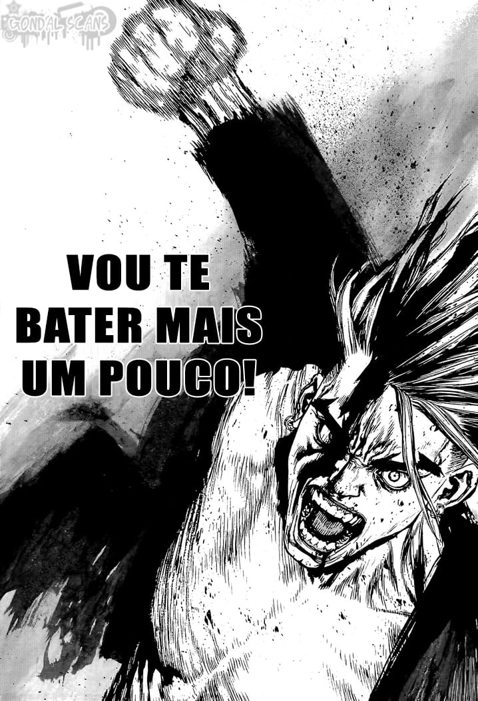

Sobre Sum-ken Rock
Sum-ken Rock é um mangá eletricamente carregado de ação, comédia e emoção, criado por Boichi. A história segue Rock, um jovem comum que, após a morte de sua namorada, se vê imerso no perigoso mundo das gangues. Com uma mistura de coragem e inteligência, ele acaba se tornando o líder de uma organização criminosa na Coreia, onde se envolve em batalhas intensas, estratégias ousadas e confrontos mortais.
O que torna Sum-ken Rock único é sua narrativa imprevisível e personagens profundamente humanos, que vão de vilões assustadores a aliados improváveis, todos com suas próprias motivações e histórias emocionantes. A arte detalhada e dinâmica de Boichi complementa a trama, trazendo cenas de ação incríveis e expressões impactantes que tornam cada página um espetáculo visual.
Este mangá é para quem gosta de histórias com reviravoltas, personagens cativantes e, claro, uma boa dose de ação. Se você busca uma trama cheia de adrenalina, com personagens complexos e uma profundidade inesperada, Sum-ken Rock vai te prender desde o primeiro capítulo. Prepare-se para se apaixonar por este emocionante conto de poder, lealdade e vingança!
 

Sobre o Autor: Boichi
Boichi, cujo nome real é Mujik Park, é um mangaká sul-coreano, conhecido por sua habilidade excepcional em desenhar e pela narrativa envolvente em suas obras. Além de *Sum-ken Rock*, Boichi também é autor de *Dr. Stone*, um mangá de ficção científica que também ganhou popularidade mundial. Seu estilo de arte é detalhado e dinâmico, o que o destaca em suas produções.